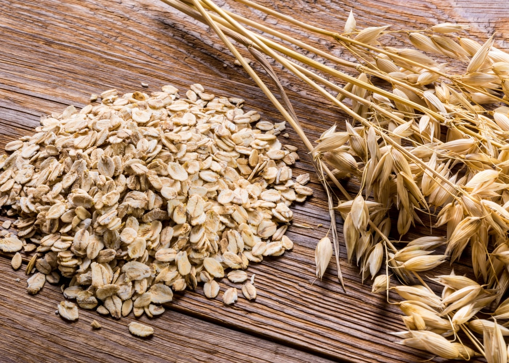
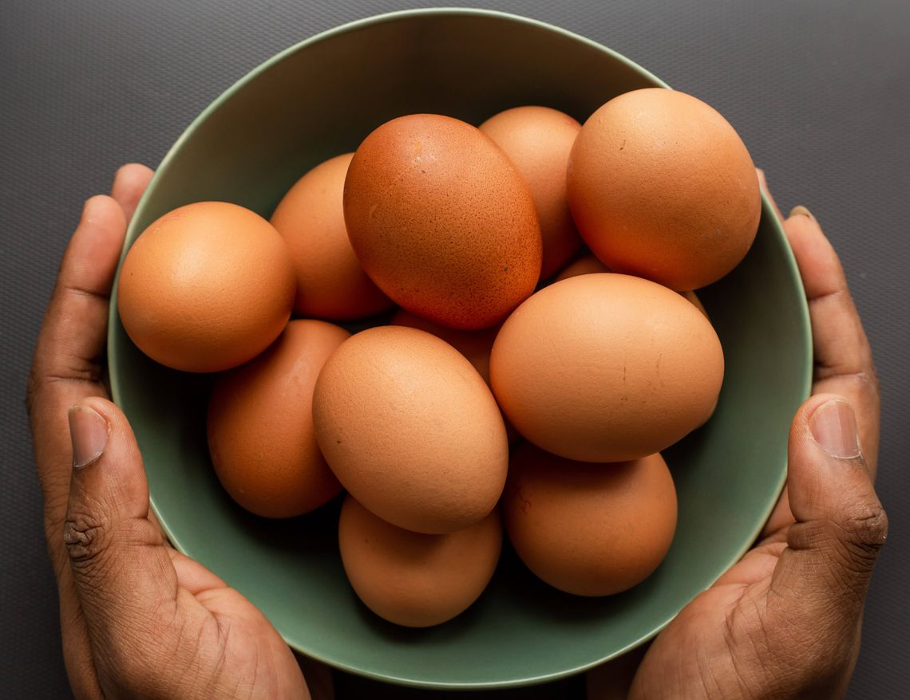
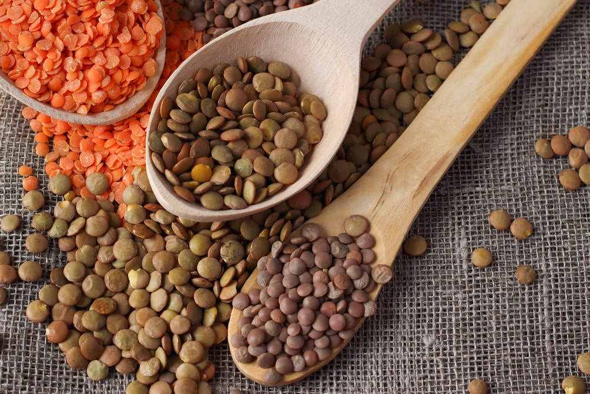

Comer sano no es sinónimo de gastar mucho dinero
Siempre hemos pensado que comer sano lleva una gran inversión, esto parece tener
algo de sentido, hay una variedad de alimentos sanos que suelen ser muy costosos, como los
frutos secos por dar un ejemplo. Sin embargo, esta alimentación con
el tiempo, termina siendo una inversión y fuera de ellos existen infinidad de
alimentos que no son costosos y tienen un gran valor nutritivo.
Hoy te dejamos el dato de tres aliementos que son tan versátiles y nutritivos como deliciosos, y
lo mejor de todo, son súper económicos
Avena

Composición
- 66% de Carbohidrato.
- 16% de Proteína.
- 10% de Fibra.
- 8% de Agua.
- Además de ello es rica en vitaminas y minerales.
Beneficios
- Es rica en antioxidantes.
- Alimenta las bacterias buenas del intestino.
- Regula los niveles de azúcar.
- Ayuda a reducir el colesterol.
- Previene la aparicón del asma.
- Mantiene tu peso a raya.
Usos
La avena es muy usada en budines, tortas, crepes, pancakes, tostadas, sopas, atoles,
batidos...
también es un excelente rebozador.
Huevos

Composición
- 76% de Agua.
- 13% de Proteína.
- 10% de Grasa.
- 1% de Carbohidratos.
- También es un alimento rico en vitaminas y minerales.
Beneficios
- Es rico en antioxidantes.
- Mejora la salud cardiovascular.
- Ayuda al desarrollo saludable del cerebro.
- Contrarrestan procesos degenerativos que afectan la visión.
- Reducen el riesgo de cáncer de mama.
Usos
Los huevos son uno de los alimentos más multiusos que exiten, pueden prepararse solos en
distintas
presentaciones: pochados, cocidos, revueltos, fritos... además de sus complementarios en
postres,
tartas, salsas y emulsiones, entre otros.
Lentejas

Composición
- 54% de Carbohidratos.
- 26% de Proteína.
- 11% de Fibra.
- 8% de Agua.
- 1% de Grasa.
- Al igual que los anteriores, represeta una fuente importante de vitaminas y minerales.
Beneficios
- Súper alimento (alimento completo).
- Apotan proteínas de buena calidad.
- Favorecen la salud intestinal.
- Ayudan a prevenir enfermedades del corazón.
- Ayudan a mantener estables los niveles de glucosa
- Ayudan a mantener niveles correctos de hierro, por su alta concentración de este
mineral.
Usos
Las lentejas se suelen preoarar en sopas y guisos pero son un excelente reemplazo de las
carnes
para
algunos rellenos o incluso se pueden procesar cocidas y darles forma de hamburguesa, también
son
excelentes en ensaladas, y hay quienes también las usan como base para salsas. Se recomienda
consumirlas en conjunto con algún carbohidrato para una buena absorción de sus nutrientes.